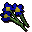

Flowers

| Config name | flowers_waterfall_quest_blue |
| Item id | 2464 |
| Value | 100 gp |
| Weight | 1oz |
| Members | Yes |
| Tradeable | Yes |
| Stackable | No |
| Equip slot | righthand |
| Options | Wield |
| Category | flowers |
| Defined in | scripts/general_use/configs/flowers.obj |
| Equipment stats | Stab att -100, Slash att -100, Crush att -50, Strength -10 |
Flowers
A posy of flowers.
Referenced in scripts
scripts/general_use/scripts/mithril_seeds.rs2